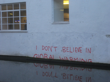

Fragilité du lien social : Négation des thèses scientifiques
La méfiance envers les thèses scientifiques n'est pas nouvelle, cependant, ce phénomène prend de plus en plus d'ampleur à l'ère d'Internet et de la désinformation. Aujourd'hui, avec les réseaux sociaux, ce phénomène peut se propager beaucoup plus rapidement et plus efficacement. Nous allons étudier différentes théories qui composent ce phénomène, ainsi que leur impact sur la fragilisation du lien social.
Dans le monde, on recenserait plus de 250 théories visant à contredire les thèses scientifiques, certaines étant plus connues que d'autres.
Il est bon de noter que la majorité de ces théories relèvent du complotisme.
On peut aussi remarquer que plus vôtre degré d'éducation est haut, moins vous êtes susceptible de croire à ces théories, et que vous êtes moins susceptible de croire à ces théories, si vôtre âge est proche de 38 ans.
On note aussi que vos opinions politiques et vôtre dégré de superstition jouent un rôle, bien que moins important, dans vôtre susceptibilité à croire à ces théories.
Voici une liste des plus connues par ordre croissant, accompagnées d'une courte description :
Selon la théorie de la terre plate, nôtre planète terre serait en fait plate et non sphéricale.
Bien que très connue, cette théorie est la moins populaire dans nôtre liste. Cela est dû au fait que cette théorie repose sur des arguments que l'on peut prouver être faux très simplement.
De plus, les platistes se contredisent sans arrêt entre eux, car ils ne cessent de chercher de nouveaux arguments, de plus en plus farfelus.
Cependant, 1 français sur 11 pense qu'il est possible que la terre soit plate et non sphérique, et ce nombre est en forte hausse ( + 14% sur 4 ans )
Selon une théorie, le gouvernement américain n'aurait jamais envoyé de fusée sur la lune, et l'intégralité des vidéos disponibles auraient été crées par ordinateur. L'origine de cette théorie est incertaine, mais il semble y avoir un lien avec un groupe de platistes dans le début des années 70. Cette théorie bien que moins connue est plus populaire chez les français, en effet, près de 1 français sur 6 croît à cette théorie. La popularisation de cette théorie a eu pour conséquence une méfiance globale envers les agences spatiales gouvernementales sur les 50 dernières années.
Une Théorie qui a beaucoup fait parler d'elle l'année dernière est celle qui stipule que le SARS-CoV-2 ( virus responsable de la COVID-19 ) a été crée dans un laboratoire chinois, et qu'un animal porteur d'une souche modifiée se serait échappé pour finir sur le marché de gros de fruits de mer de Huanan, zone de détection du virus en Décembre 2019. A son pic en mai 2020, 1 français sur 4 se disait en accord avec cette théorie. Cette théorie a vite été réfutée par la communauté scientifique, car des souches similaires étaient déjà présentent dans la nature plusieurs années auparavant. Cependant, cela n'a pas empêché des tensions dimplomatiques de se former entre les Etats-Unis d'Amérique et la République populaire de Chine, et ce jusqu'a la fin du mandat de Donald Trump, le 20 Janvier 2021
Le climato-scepticisme est l'idée selon laquelle le réchauffement climatique est inexistant ou d'origine naturelle La majorité des climato-sceptiques insitent sur le fait que la terre se trouve au début d'une période de réchauffement, et que l'activité humaine n'accentue pas ce phénomène. 35% des français se déclarent climato-sceptiques, et parmi eux, les deux tiers consièrent que le réchauffent climatique existe, mais que l'action humaine n'a aucune influence sur celui-ci. Le tiers restant nie totalement son existance. Dans le monde, les climato-sceptiques auraient empéché plusieurs centaines d'actions pour le climat, et engendré des troubles dans les relations internationales quand les Etats-Unis se sont retirés de l'accord de Paris le 20 Novembre 2020. Ci-dessous, dérision totale du climato-scepticisme 